rm(list = ls())
library(arrow)##
## Attaching package: 'arrow'## The following object is masked from 'package:utils':
##
## timestamplibrary(ggplot2)
theme_set(theme_bw(base_size = 15))
source('https://gist.githubusercontent.com/liangyy/43912b3ecab5d10c89f9d4b2669871c9/raw/3ca651cfa53ffccb8422f432561138a46e93710f/my_ggplot_theme.R')
source('https://gist.githubusercontent.com/liangyy/489d1519dd45246caf4756d7722bfa25/raw/008367adbab79c217b92e27e26a099e6e1875f41/fast_linear_regression')
library(dplyr)##
## Attaching package: 'dplyr'## The following objects are masked from 'package:stats':
##
## filter, lag## The following objects are masked from 'package:base':
##
## intersect, setdiff, setequal, unionoptions(stringsAsFactors = F)
library(patchwork)
library(data.table)## data.table 1.14.2 using 1 threads (see ?getDTthreads). Latest news: r-datatable.com## **********
## This installation of data.table has not detected OpenMP support. It should still work but in single-threaded mode.
## This is a Mac. Please read https://mac.r-project.org/openmp/. Please engage with Apple and ask them for support. Check r-datatable.com for updates, and our Mac instructions here: https://github.com/Rdatatable/data.table/wiki/Installation. After several years of many reports of installation problems on Mac, it's time to gingerly point out that there have been no similar problems on Windows or Linux.
## **********##
## Attaching package: 'data.table'## The following objects are masked from 'package:dplyr':
##
## between, first, lastoptions(datatable.fread.datatable = F)
source('rlib.R')Truncation based z-scores
find_bounds <- function(x, func, step_size = 1.001) {
low <- x
if(func(low) > 0) {
message('something is wrong')
return(NA)
}
high <- low
while(func(high) <= 0) {
high <- high * step_size
}
return(c(low, high))
}
varz_from_truncated_zscore <- function(zscores, cutoff) {
c <- abs(cutoff)
z_trunc <- zscores[abs(zscores) < c]
if(length(z_trunc) < 50) {
message('Too few weak observations')
return(NA)
}
v <- var(z_trunc)
obj <- function(s) {
phi_c <- dnorm(c / s)
Phi_neg_c <- pnorm(-c / s)
s ^ 2 * (1 + - 2 * phi_c * c / s / (1 - 2 * Phi_neg_c)) - v
}
bounds <- find_bounds(sqrt(v), obj)
# bounds <- c(sqrt(v), 100 * sqrt(v))
res <- uniroot(obj, bounds)$root
return(res ^ 2)
}\[ \newcommand{\cov}{\text{Cov}} \newcommand{\var}{\text{Var}} \newcommand{\cor}{\text{Cor}} \newcommand{\pve}{\text{PVE}} \]
See details and scripts at submission/simulation/.
Method label definition:
bxcan_ridge: S-BrainXcan with ridge regression based weights and banded genotype covariance (band size = 200)bxcan_1000_ridge: S-BrainXcan with ridge regression based weights and banded genotype covariance (band size = 1000)bxcan_ideal: S-BrainXcan with true weights and banded genotype covariance (band size = 200)bxcan_1000_ideal: S-BrainXcan with true weights and banded genotype covariance (band size = 1000)indiv_ideal: Individual level BrainXcan with true weightsgencor: Genetic correlationget_n <- function(s, n, func = as.numeric) {
return(unlist(lapply(strsplit(s, '_'), function(x) {func(x[n])})))
}
get_h2 <- function(s) {
return(get_n(s, 4))
}
get_m <- function(s) {
return(paste0('m_', get_n(s, 2)))
}
get_z <- function(pval, eff) {
- qnorm(pval / 2) * sign(eff)
}
get_p_exp <- function(pval) {
rank(pval, ties.method = 'random') / (length(pval) + 1)
}
load_bxcan_permz <- function(fn_prefix, fn_perf) {
kk <- read.csv(glue::glue('{fn_prefix}.csv'))
kk$h2 <- get_h2(kk$IDP)
kk2 <- read.csv(glue::glue('{fn_prefix}.perm_null.csv'))
kk3 <- read.table(fn_perf, header = T)$phenotype
kk2$pheno <- rep(kk3, 10)
kk2$h2 <- get_h2(kk2$pheno)
kk2_varz <- kk2 %>%
group_by(h2) %>%
summarize(varz = var(value)) %>%
ungroup()
kk <- left_join(kk, kk2_varz, by = 'h2') %>%
mutate(z_adj_permz = z_brainxcan / sqrt(varz)) %>%
mutate(pval_adj_permz = z2p(z_adj_permz))
res <- kk %>%
select(IDP, bhat, pval, pval_adj_permz)
return(res)
}Load S-BrainXcan and LDSC based genetic correlation results.
h2s <- c(0.3, 0.5, 0.7, 0.9)
pves <- c(0.3, 0.5, 0.7, 0.9)
types <- c('null', 'alt')
rands <- 1 : 5
datadir <- '/Users/yanyuluchicago/Desktop/tmp/ukb_idp/simulation'
df <- list()
for(rand in rands) {
rand1 <- 2010 + rand
rand2 <- 2020 + rand
fn_idps_ideal <- glue::glue('{datadir}/simulate_phenotypes_param2/param2.rand_{rand}.snp_effect.perf.tsv.gz')
for(pve in pves) {
for(type in types) {
for(h2 in h2s) {
fn_idps <- glue::glue('{datadir}/train_ridge_param2/split.param2.group_group1.rand_{rand1}.ridge.h2_{h2}.perf.tsv.gz')
fn_b <- glue::glue('{datadir}/bxcan_permz_param2/permz_param2_{rand}_rand_{rand2}.oy.{type}_h2_{h2}_pve_{pve}')
fn_b_1k <- glue::glue('{datadir}/bxcan_1000_permz_param2/permz_1000_param2_{rand}_rand_{rand2}.oy.{type}_h2_{h2}_pve_{pve}')
fn_b_ideal<- glue::glue('{datadir}/ideal_bxcan_permz_param2/ideal_permz_param2_{rand}_rand_{rand2}.oy.{type}_h2_{h2}_pve_{pve}')
fn_b_ideal_1k <- glue::glue('{datadir}/ideal_bxcan_1000_permz_param2/ideal_permz_1000_param2_{rand}_rand_{rand2}.oy.{type}_h2_{h2}_pve_{pve}')
fn_g <- glue::glue('{datadir}/gen_cor_param2/group1.rand_{rand1}_x_group2_x_rand_{rand2}.oy.{type}_h2_{h2}_pve_{pve}.ldsc_rg.log')
kk_b <- load_bxcan_permz(fn_b, fn_idps)
kk_b_1k <- load_bxcan_permz(fn_b_1k, fn_idps)
kk_b_ideal <- load_bxcan_permz(fn_b_ideal, fn_idps_ideal) %>% filter(IDP != 'b_y_null')
kk_b_ideal_1k <- load_bxcan_permz(fn_b_ideal_1k, fn_idps_ideal) %>% filter(IDP != 'b_y_null')
kk_g <- load_ldsc_rg(fn_g)
kk_b <- kk_b %>%
filter(get_h2(IDP) == h2) %>%
mutate(m = get_m(IDP)) %>%
rename(eff = bhat) %>%
select(m, eff, pval, pval_adj_permz)
kk_b_1k <- kk_b_1k %>%
filter(get_h2(IDP) == h2) %>%
mutate(m = get_m(IDP)) %>%
rename(eff = bhat) %>%
select(m, eff, pval, pval_adj_permz)
kk_b_ideal <- kk_b_ideal %>%
mutate(m = get_m(IDP)) %>%
rename(eff = bhat) %>%
select(m, eff, pval, pval_adj_permz)
kk_b_ideal_1k <- kk_b_ideal_1k %>%
mutate(m = get_m(IDP)) %>%
rename(eff = bhat) %>%
select(m, eff, pval, pval_adj_permz)
kk_g <- kk_g %>%
filter(get_h2(p2) == h2) %>%
mutate(m = get_m(p2), pval_adj_permz = NA) %>%
rename(pval = p, eff = rg) %>%
select(m, eff, pval, pval_adj_permz)
kk <- rbind(
kk_b %>% mutate(method = 'bxcan_ridge'),
kk_g %>% mutate(method = 'gencor'),
kk_b_1k %>% mutate(method = 'bxcan_1000_ridge'),
kk_b_ideal %>% mutate(method = 'bxcan_ideal'),
kk_b_ideal_1k %>% mutate(method = 'bxcan_1000_ideal'))
df[[length(df) + 1]] <- kk %>% mutate(h2 = h2, pve = pve, type = type, rand = rand)
}
}
}
}
df <- do.call(rbind, df)
df_eff <- list()
for(rand in rands) {
fn <- glue::glue('{datadir}/simulate_phenotypes_param2/param2.rand_{rand}.mediator_effect.parquet')
kk <- read_parquet(fn)
kk$mediator <- as.numeric(kk$mediator)
df_eff[[length(df_eff) + 1]] <- kk %>%
mutate(rand = rand) %>%
rename(m = mediator) %>%
mutate(m = paste0('m_', m))
}
df_eff <- do.call(rbind, df_eff)
df <- left_join(df, df_eff, by = c('m', 'rand'))Load the BrainXcan results under the ideal case (associating the true genetic component of a mediator and the phenotype).
df_ideal <- list()
for(rand in rands) {
rand1 <- 2010 + rand
rand2 <- 2020 + rand
df_gmed <- read_parquet(glue::glue('{datadir}/simulate_phenotypes_param2/param2.group_group2.rand_{rand2}.gmed.parquet'))
df_yobs <- read_parquet(glue::glue('{datadir}/simulate_phenotypes_param2/param2.group_group2.rand_{rand2}.oy.parquet'))
df_indiv <- df_gmed[, 1, drop = FALSE]
df_yobs <- left_join(df_indiv, df_yobs, by = 'individual')
fast_lm_on_ys <- function(ymat, xmat) {
res <- list()
for(i in 1 : ncol(ymat)) {
y <- ymat[, i]
tmp <- fast_linear_regression(y, xmat, matrix(1, nrow = length(y), ncol = 1))
res[[length(res) + 1]] <- data.frame(
y = colnames(ymat)[i],
x = names(tmp$bhat),
bhat = tmp$bhat,
pval = tmp$pval)
}
res <- do.call(rbind, res)
rownames(res) <- NULL
return(res)
}
res <- fast_lm_on_ys(
df_yobs[, -1] %>% as.matrix(),
df_gmed[, -1] %>% as.matrix())
res <- res %>% mutate(
h2 = get_n(y, 3),
pve = get_n(y, 5),
type = get_n(y, 1, as.character))
df_ideal[[length(df_ideal) + 1]] <- res %>% mutate(rand = rand)
}
df_ideal <- do.call(rbind, df_ideal)
df_all <- rbind(
df_ideal %>%
mutate(method = 'indiv_ideal', pval_adj_permz = NA) %>%
rename(eff = bhat, m = x) %>%
select(m, eff, pval, pval_adj_permz, method, h2, pve, type, rand) %>%
left_join(df_eff, by = c('m', 'rand')),
df)
df_all <- df_all %>%
mutate(z_bxcan = p2z(pval, eff)) %>%
group_by(method, h2, pve, type, rand) %>%
mutate(z_adj_trunc = z_bxcan / sqrt(varz_from_truncated_zscore(z_bxcan, 4))) %>%
ungroup() %>%
mutate(pval_adj_trunc = z2p(z_adj_trunc))
min_p <- 1e-50
df_all$pval[df_all$pval < min_p] <- min_p
df_all$pval[df_all$pval > 1 - min_p] <- 1 - min_p
df_all$pval_adj_permz[df_all$pval_adj_permz < min_p] <- min_p
df_all$pval_adj_permz[df_all$pval_adj_permz > 1 - min_p] <- 1 - min_p
df_all$pval_adj_trunc[df_all$pval_adj_trunc < min_p] <- min_p
df_all$pval_adj_trunc[df_all$pval_adj_trunc > 1 - min_p] <- 1 - min_p
df_all <- df_all %>%
mutate(h2_y = pve * h2) %>%
mutate(z = get_z(pval, eff)) %>%
mutate(z_adj_permz = get_z(pval_adj_permz, eff)) %>%
mutate(z_adj_trunc = get_z(pval_adj_trunc, eff))QQ-plot.
df_all %>%
filter(type == 'null') %>%
group_by(h2_y, method) %>% mutate(p_exp = get_p_exp(pval)) %>%
ungroup() %>%
ggplot() +
geom_point(aes(x = -log10(p_exp), y = -log10(pval), color = method)) +
geom_abline(intercept = 0, slope = 1) +
facet_wrap(~h2_y, labeller = label_both) + th2 +
theme(axis.text.x = element_text(angle = 90, hjust = 1, vjust = .5))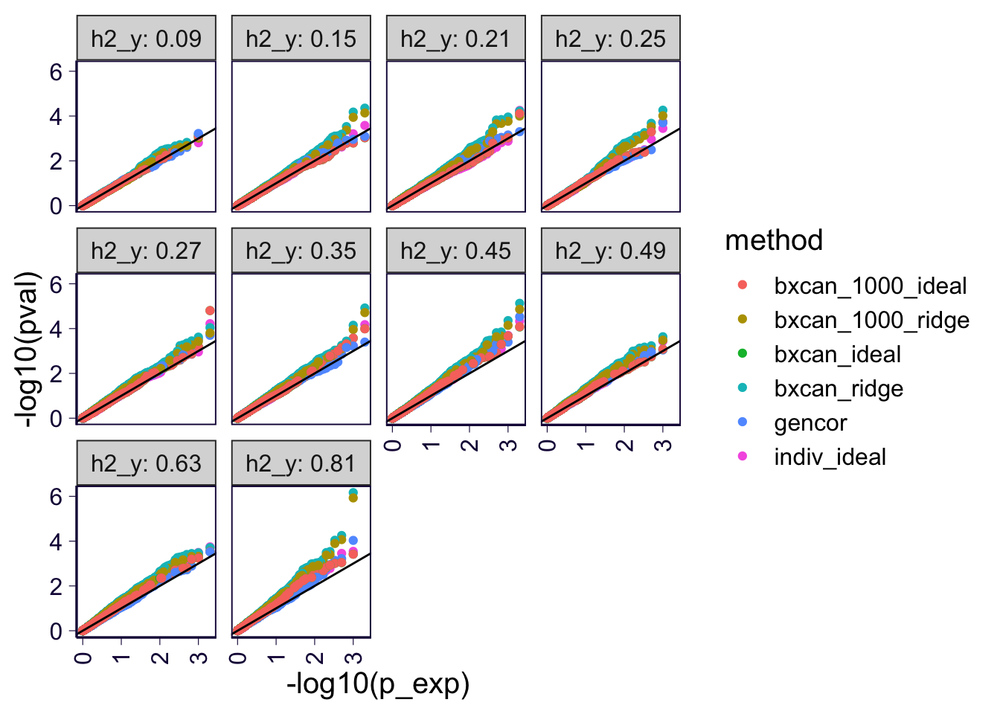
df_all %>%
filter(type == 'null') %>%
group_by(h2_y, method) %>% mutate(p_exp = get_p_exp(pval_adj_permz)) %>%
ungroup() %>%
ggplot() +
geom_point(aes(x = -log10(p_exp), y = -log10(pval_adj_permz), color = method)) +
geom_abline(intercept = 0, slope = 1) +
facet_wrap(~h2_y, labeller = label_both) + th2 +
theme(axis.text.x = element_text(angle = 90, hjust = 1, vjust = .5))## Warning: Removed 32000 rows containing missing values (geom_point).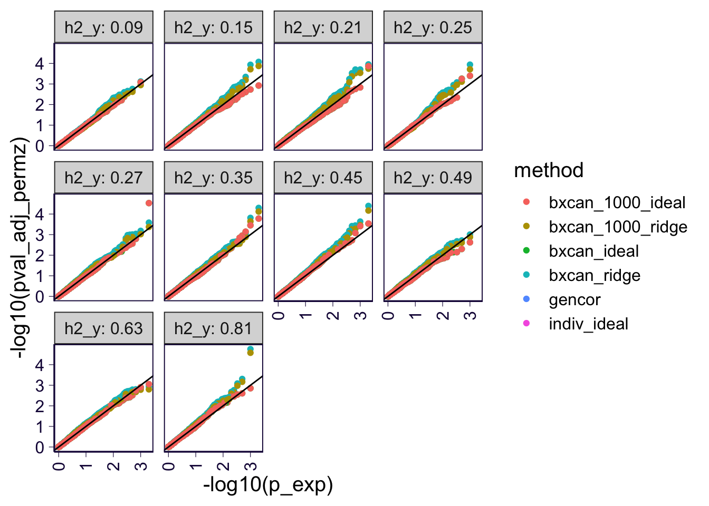
df_all %>%
filter(type == 'null') %>%
group_by(h2_y, method) %>% mutate(p_exp = get_p_exp(pval_adj_trunc)) %>%
ungroup() %>%
ggplot() +
geom_point(aes(x = -log10(p_exp), y = -log10(pval_adj_trunc), color = method)) +
geom_abline(intercept = 0, slope = 1) +
facet_wrap(~h2_y, labeller = label_both) + th2 +
theme(axis.text.x = element_text(angle = 90, hjust = 1, vjust = .5))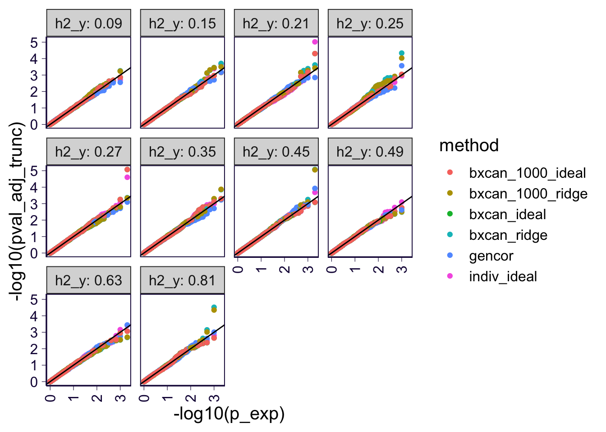
df_all %>%
filter(type == 'null') %>%
group_by(h2_y, pve, method) %>%
summarize(varz = var(z), varz_permz = var(z_adj_permz), varz_trunc = var(z_adj_trunc)) %>%
ungroup() %>%
reshape2::melt(id.var = c('h2_y', 'method', 'pve')) %>%
ggplot() +
# geom_violin(aes(x = method, y = value, fill = variable), position = position_dodge(0.5)) +
geom_boxplot(aes(x = method, y = value, fill = variable), position = position_dodge(0.5), width = 0.2) + th +
theme(axis.text.x = element_text(angle = 90, hjust = 1, vjust = .5))## `summarise()` has grouped output by 'h2_y', 'pve'. You can override using the `.groups` argument.## Warning: Removed 32 rows containing non-finite values (stat_boxplot).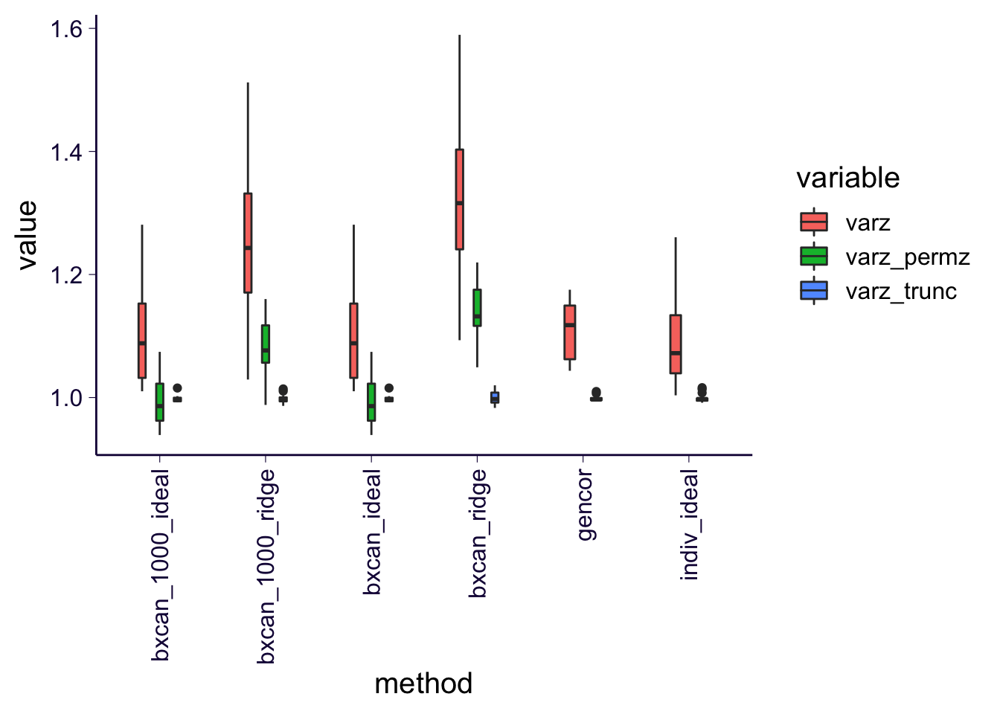
QQ-plot.
df_all %>%
filter(type == 'alt') %>%
group_by(pve, h2, method) %>% mutate(p_exp = get_p_exp(pval)) %>%
ungroup() %>%
ggplot() +
geom_point(aes(x = -log10(p_exp), y = -log10(pval), color = method)) +
geom_abline(intercept = 0, slope = 1) +
facet_grid(h2~pve, labeller = label_both) + th2 +
theme(axis.text.x = element_text(angle = 90, hjust = 1, vjust = .5))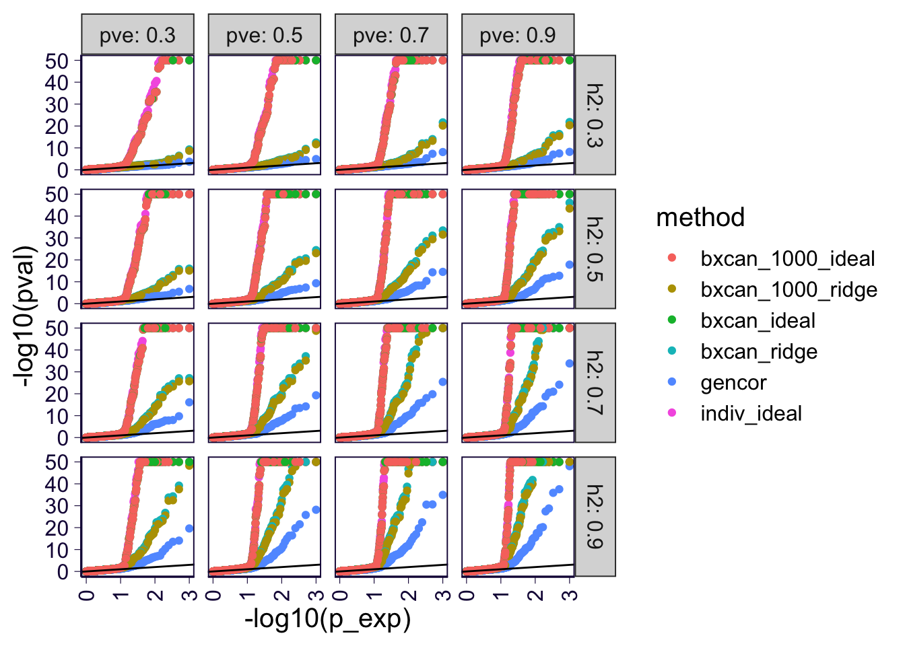
df_all %>%
filter(type == 'alt') %>%
group_by(pve, h2, method) %>% mutate(p_exp = get_p_exp(pval_adj_permz)) %>%
ungroup() %>%
ggplot() +
geom_point(aes(x = -log10(p_exp), y = -log10(pval_adj_permz), color = method)) +
geom_abline(intercept = 0, slope = 1) +
facet_grid(h2~pve, labeller = label_both) + th2 +
theme(axis.text.x = element_text(angle = 90, hjust = 1, vjust = .5))## Warning: Removed 32000 rows containing missing values (geom_point).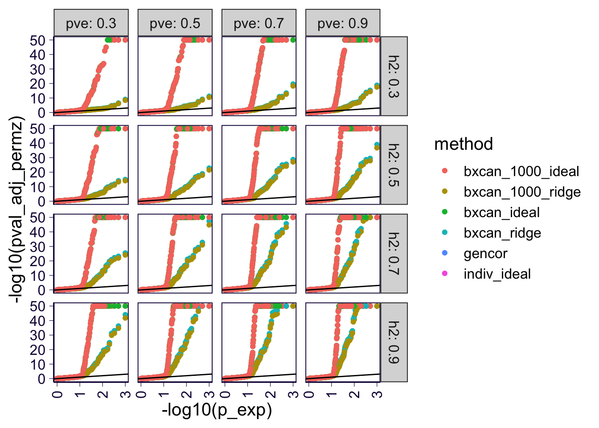
df_all %>%
filter(type == 'alt') %>%
group_by(pve, h2, method) %>% mutate(p_exp = get_p_exp(pval_adj_trunc)) %>%
ungroup() %>%
ggplot() +
geom_point(aes(x = -log10(p_exp), y = -log10(pval_adj_trunc), color = method)) +
geom_abline(intercept = 0, slope = 1) +
facet_grid(h2~pve, labeller = label_both) + th2 +
theme(axis.text.x = element_text(angle = 90, hjust = 1, vjust = .5))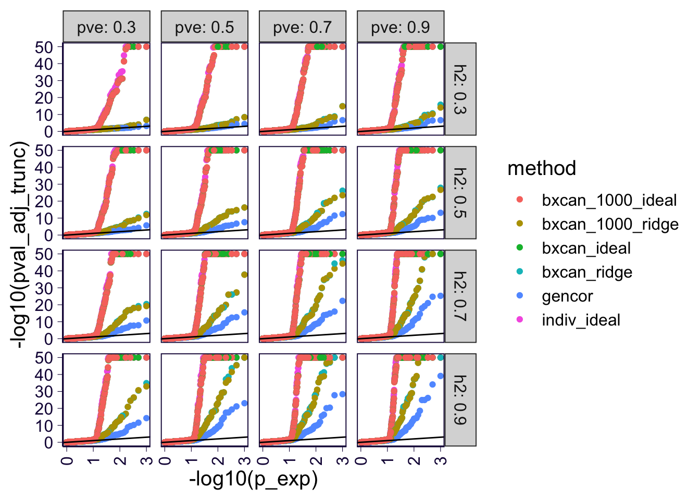
True effect size vs estimates
For genetic correlation, under the model \[\begin{aligned} M &= X B + E \\ Y &= M \beta + e \\ B &\sim_{iid} N(0, 1) \\ \beta &\sim \pi_0\delta_0 + (1 - \pi_0) N(0, 1) \end{aligned}\] We can re-write \(Y\) as \[\begin{aligned} Y &= M\beta + e \\ &= (XB + E) \beta + e \\ &= XB\beta + E\beta + e \\ &= X \underbrace{B\beta}_{b} + \underbrace{E\beta + e}_{\epsilon} \end{aligned}\] Let \(h^2\) be the heritability of mediators and \(\pve\) be the proportion of variation in \(Y\) explained by mediators, then the heritability of \(Y\) is \(\frac{h^2}{1 + \frac{1 - \pve}{\pve}} = h^2 \cdot \pve\).
Let’s treat \(\beta\) to be fixed since it is shared by all variants. But \(B\) is treated as random since we will aggregate over genome-wide effects which should be close to handling it as random.
\[\begin{aligned} \cov(b, B_k) &= \cov(B\beta, B_k) \\ &= \cov(\sum_c B_c \beta_c, B_k) \\ &= \beta_k \\ \var(b) &= \var(B\beta) \\ &= \sum_c \beta_c^2 \\ \var(B_k) &= 1 \\ \cor(b, B_k) &= \frac{\beta_k}{\sqrt{\sum_c \beta_c^2}} \\ &\approx \frac{\beta_k}{\sqrt{m \cdot (1 - \pi_0)}} \end{aligned}\] , where \(m\) is the number of mediators.
df_all %>%
filter(type == 'alt') %>%
ggplot() +
geom_point(aes(x = beta, y = eff, color = method)) +
geom_abline(intercept = 0, slope = 1) +
geom_abline(intercept = 0, slope = 1 / sqrt(200 * 0.1), linetype = 2) +
facet_wrap(~method) + th2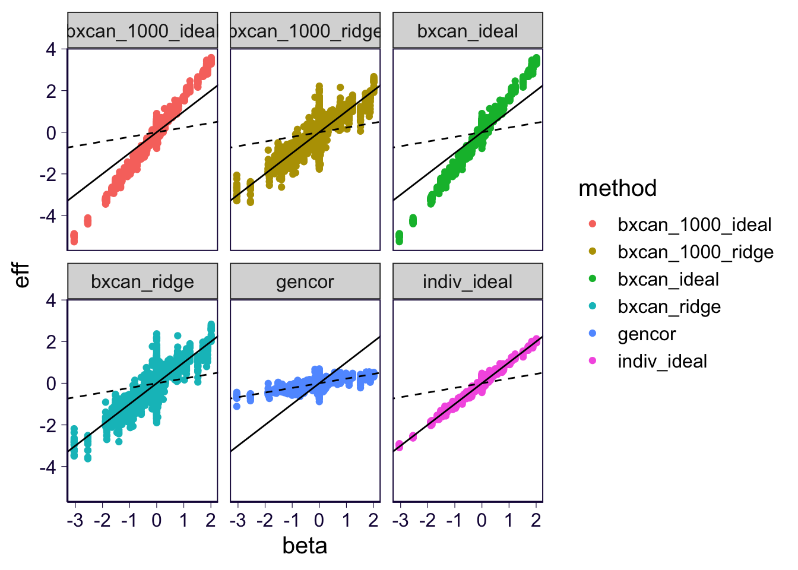
Power under Bonferroni
p_cutoff <- 0.05
df_all$true_signal <- df_all$beta != 0
df_all$true_signal[df_all$type == 'null'] <- FALSE
df_sig <- rbind(
df_all %>%
group_by(method, type, h2, pve, rand) %>%
filter(pval_adj_permz < p_cutoff / n()) %>%
ungroup() %>%
mutate(adj = 'perm_z'),
df_all %>%
group_by(method, type, h2, pve, rand) %>%
filter(pval < p_cutoff / n()) %>%
ungroup() %>%
mutate(adj = 'raw_z'),
df_all %>%
group_by(method, type, h2, pve, rand) %>%
filter(pval_adj_trunc < p_cutoff / n()) %>%
ungroup() %>%
mutate(adj = 'trunc_z')
)
df_sig %>%
filter(type == 'null') %>%
ggplot() +
geom_bar(aes(x = true_signal, fill = method), position = 'dodge') +
facet_grid(.~adj, scales = 'free_y', labeller = label_both) + th2 +
ggtitle('False positives under the null')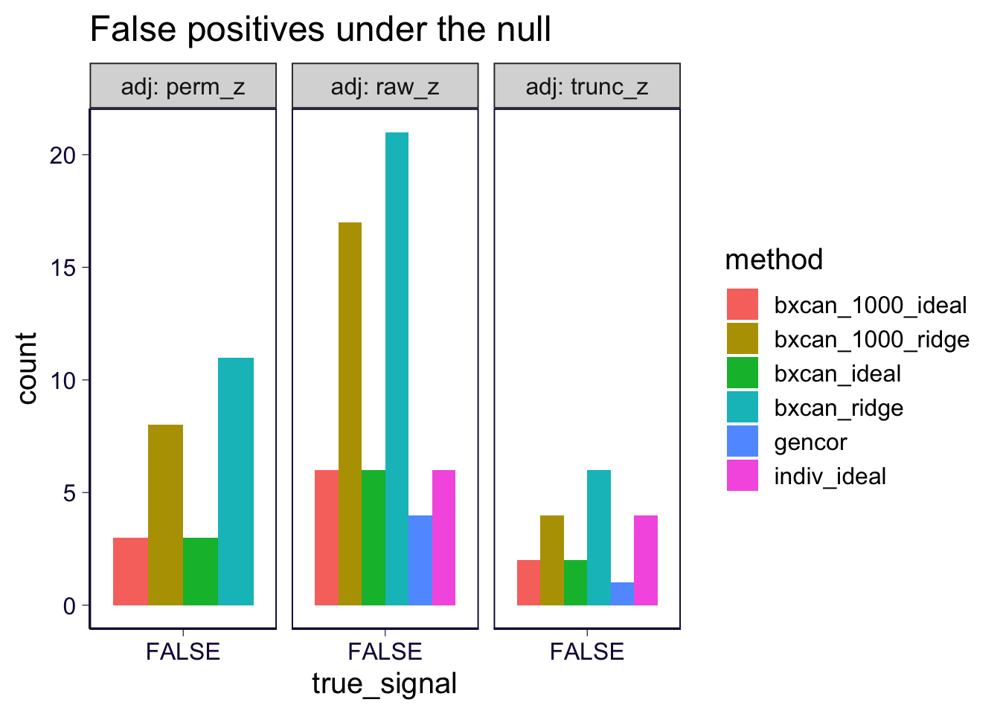
df_sig %>%
filter(type == 'alt', true_signal) %>%
ggplot() +
geom_bar(aes(x = true_signal, fill = method), position = 'dodge') +
facet_grid(.~adj, scales = 'free_y', labeller = label_both) + th2 +
ggtitle('True positives under the alternative')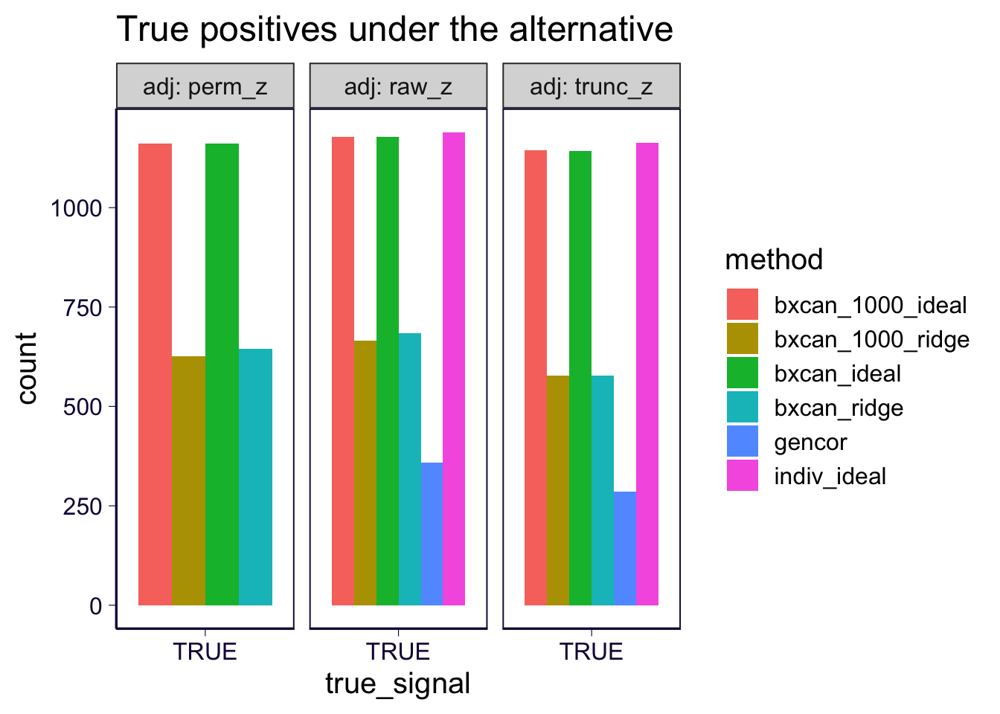
df_sig %>%
filter(type == 'alt', !true_signal) %>%
ggplot() +
geom_bar(aes(x = true_signal, fill = method), position = 'dodge') +
facet_grid(.~adj, scales = 'free_y', labeller = label_both) + th2 +
ggtitle('False positives under the alternative')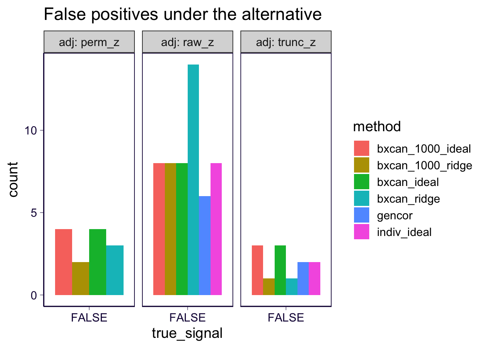